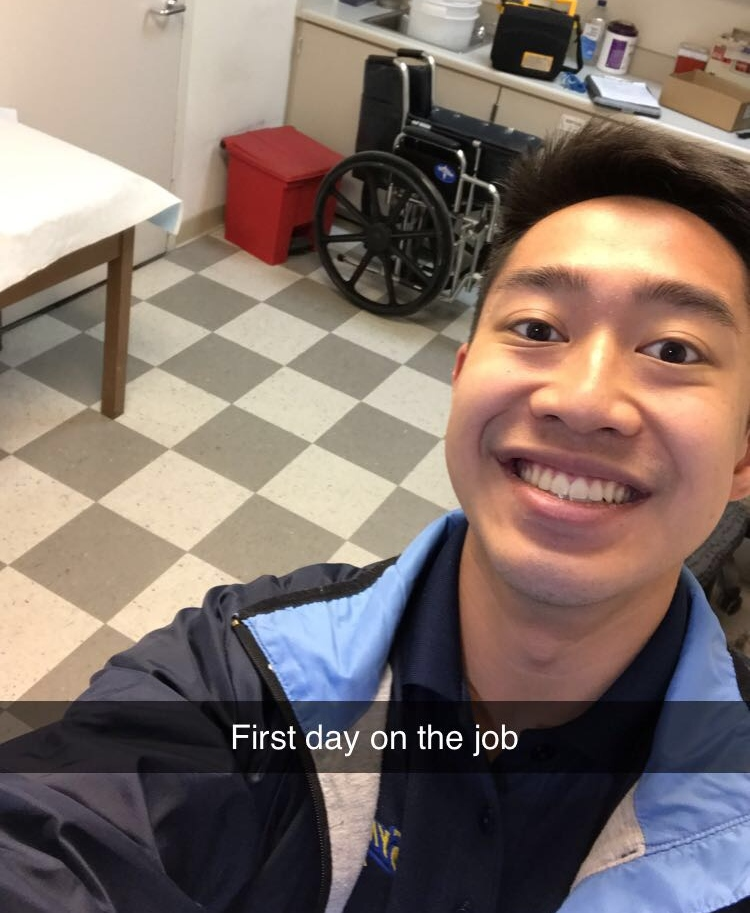

Danison Gamboa
My overall career goal is to become a physician. When I heard about what health coaches do, I started thinking about how no matter how adept someone’s knowledge may be in medicine, it won’t matter if a patient does not want to listen to you. At a program called COPE Health Scholars, I aid staff with hands-on patient care at Riverside Community Hospital on various floors. This encompasses bathing, ambulating, vitals, positioning, setting up EKGs, and providing emotional support. Everything I do is under the supervision of a wide range of hospital staff which requires steady communication and teamwork. One of the advantages of this program is that I can directly get involved with patients’ treatments and in the process learn to listen carefully to their concerns and more importantly, help empower them to take care of themselves along with the clinical staff.
It’s easy to think that I can find the best way to address someone’s issues but the reality is that there are countless situations I can run into and even more variables that can make similar situations vastly different from one another. For me, the only way to prepare myself is to experience as many situations as possible and figure out the best angle for me to approach.
I work events as an EMT for Symons Ambulance where I work solo or with a team based on the size of the event. We assess and provide basic treatment for respiratory, cardiac, or trauma emergencies. For these events, I reside in a First Aid station or at a watch tower to react to emergencies. Through working here, I’ve been able to expose myself to numerous different settings where I’m assigned to directly care for the patients in need. This gave me the knowledge to appropriately talk to a patient as it required me to know the full extent of my medical scope in detail while it also prompted me to always look for underlying issues through efficient questions and rapid assessment of their injury sight and body.
The different exposure to patient care experience has also allowed me to connect with people on a deeper level and it has honed my ability to listen and comprehend what they need. Every single patient I encountered, everyone had various levels of needs or different levels of care. How I approach a patient comes from the different experiences I have encountered on the field as I needed to modify my approach based on situations. At the end of the day, I could have the most extensive medical knowledge in the world, but none of that would matter if the patients I encounter are not willing to listen to the treatment I give them or do not trust my overall character. In the field I intend to pursue, I associate this skill with how successful I can become in the future. It’s a position that revolves around the people you work with and I won’t do my job appropriately if I cannot help those people clinically and emotionally.
Experience
Emergency Medical Technician
• Assessed and provide basic treatment for respiratory, cardiac, or trauma emergencies
• Served as a medical provider at first aid stations at public conventions, concerts, and childrens' race tracks
Director of Training
• Collaborated in a team of 3 to keep the 32 Project Leaders accountable for their group members’ activity in presenting various health care information at venues and fairs such as the IRS Fall Festival and the Lulac Health Fair for people primarily in the Inland Empire
• Worked with Project Leaders in having presentations approved by advisors from the UCR SOM
Department Coordinator
• Aided in managing Riverside Community Hospital’s COPE Offices and worked together with the leadership team in managing the program and conducting training for different hospital floors
• Managed the affairs and schedules of all volunteers on Orthopedic Surgery, MedSurg, and MICU floors and delegated concerns between the staff and volunteers
Education
University of California, Riverside
Portfolio

.jpg)
.jpg)
.jpg)